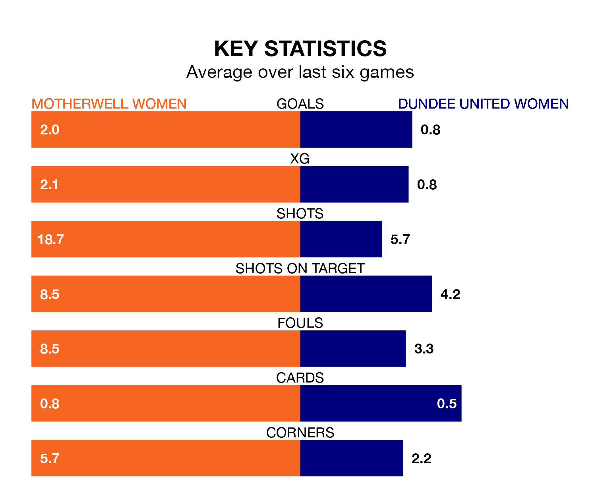

Motherwell Women host Dundee United Women at K Park Training Academy on Sunday on the back of three consecutive wins in SWPL 1.
Motherwell have picked up nine points from their last six games, and they face a Dundee United side who have lost their last 12 matches, and collected no points from the last possible 18.
Dundee United are 11th in the table after 24 games, of which they have won three and drawn one, earning 10 points.
Motherwell are three places ahead of the away team in eighth, with eight wins and one draw putting them on 25 points.
In the last 10 years, Motherwell and Dundee United have played each other on seven occasions. Motherwell won four of them, Dundee United one, and they drew twice.
On average, Motherwell scored 2.1 goals and Dundee United 1.1 in those matches.
Their last meeting was on December 17, when Motherwell won 1-0 away.
With 21 goals in 24 games so far this season, Dundee United are the league's second-lowest scorers with 0.9 goals per game. And they are conceding more than average, letting in 91 goals at a rate of 3.8 per game.
The hosts are also below average scorers, with 1.5 goals per game, compared to a league average of 2.1. They have conceded 2.3 goals per game.
Motherwell's last match was on March 31, a 3-0 win against Aberdeen, with Laura Berry (two) and Morgan Cross getting the goals for Motherwell.
Dundee United lost 4-2 against Spartans Women last time out, also on March 31, with Rachel Todd and Robyn Smith on the scoresheet.
Updated: 14:47 (UTC), 09/04/24